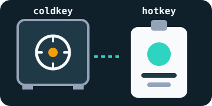

Block 1
Previous: 0000…
Hash:
Step 1
Before Bittensor, you need to understand the tool it is built on: a big account book that everyone can read, nobody can erase, and nobody owns.
In a class, one person holds the trip money and writes down who has paid. Everyone trusts them… until the day the notebook disappears or gets changed.
A blockchain replaces that person with thousands of copies of the same notebook, kept by computers all over the world. To cheat, you would have to change most of the copies at the same time: in practice, it is impossible.
Each page of the notebook is called a block. Each block carries a fingerprint (a “hash”) computed from its content and from the fingerprint of the previous block. Change a single letter in a block and watch what happens to the next ones.
Previous: 0000…
Hash:
Previous:
Hash:
Previous:
Hash:
Previous:
Hash:
The hashes are computed live with the SHA-256 algorithm, the same one Bitcoin uses. Only the first 16 characters are shown.
That is the real question of every blockchain. Bitcoin rewards those who solve a very expensive calculation that is completely useless outside the network: this is proof of work. Entire farms of machines do nothing else.
Bittensor makes a different bet: what if the rewarded work were useful? Its blockchain, called Subtensor, does not pay for empty calculations but for artificial intelligence services, scored by other participants. The next page shows how.

On Bittensor, a wallet is made of two keys:
The safe opens with a secret phrase of 12 or 24 words. Whoever knows these words owns the funds, for good: no bank and no customer service can give them back.
The Simply Explained channel shows in six minutes how blocks, hashes and the network's copies protect each other.
Source: Simply Explained, “How does a blockchain work”, YouTube.